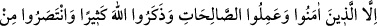
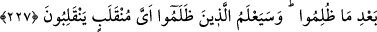

dolayı onları yererler, sonra kendileri her türlü iğrenç davranışı işlemekten geri
durmazlar. İşte bunlar sapıklığın tam olmasındandır. Hz. Peygamber (s.a.) bütün
bunlardan münezzeh, en güzel vasıflarla ve üstün ahlâkla muttasıf, doğru yol üzerinde
karar kılmış ve sırât-ı müstakîmde devamlıdır.
227. Ancak iman edip iyi işler yapanlar, Allah’ı çok çok ananlar ve haksızlığa
uğratıldıklarında kendilerini savunanlar başkadır. Haksızlık edenler, hangi dönüşe
(hangi akıbete) döndürüleceklerini yakında bileceklerdir.
Bu âyette şâirlerin mü’min ve sâlih olanları istisna edilmektedir.
“Ancak iman edip iyi işler yapanlar,” şiirlerinin çoğu tevhid, Allah’ı övme, O’na
itâat ve kulluğa teşvik, hikmet, öğüt, dünya konusunda zühd, âhirete rağbet ettirmeye
dâir olmak sûretiyle “Allah’ı çok çok ananlar” veya şiir kendilerini Allah’ı anmaktan
alıkoymayan, onu yegane endişeleri ve âdetleri haline getirmeyenler demektir.
Bayezid (k.s.): “Çok zikir, sayı ile değil huzur iledir.” der
“Ve” hicvedilerek “haksızlığa uğratıldıklarında kendilerini savunanlar”
müşriklerden intikam alanlar, Tâcü’l-masâdır’da belirtildiği üzere adâlet isteyenler
“başkadır.” Çünkü önce kâfirler onları hicvetmeye başlamıştır. Yâni bazı vakitlerde
onlardan hiciv vâki olursa, kendilerini hicveden müşriklere karşı kendilerini savunmak
maksadıyla sâdır olur. Hassân b. Sâbit, Ka’b b. Mâlik, Abdullah b. Ravâha ve
diğerleri gibi. Çünkü onlar, Rasûlullah (s.a.)’in pâk ve tâhir namus ve şerefini müdâfaa
ediyorlardı. Rasûlullah (s.a.) Hassân b. Sâbit için Mescid-i Nebevî’de bir minber
koyar, Hassân o minbere çıkar, Rasûlullah (s.a.)’i hicvedenleri hicvederdi.
Kemâl Isfahânî der ki:
Hiciv, beğenilen bir şey değilse de bir şâirde bulunması gerekir
Hicvetmeyen şâir, pençesi ve dişi olmayan aslan gibidir
Kâ’b b. Mâlik (r.a.)’tan rivâyete göre Rasûlullah (s.a.) ona şöyle buyurdu: “Onları
hicvet. Nefsim kudret elinde olan Allah’a yemin ederim ki, bu onlara ok atmaktan
daha etkilidir.”[37]
Bir hadîste: “Müşriklere karşı mallarınızla, nefislerinzle ve dillerinizle mücâhede
edin.”[38] buyrulmuştur. Yani onlara hoşlanmadıkları, işitilmesi kendilerine ağır gelen
hiciv, ağır sözler ve benzerlerini duyurun.
İmam Süheylî (r.h.) der ki: “Bu şâir sahâbîler, istisna sebebi olmuştur. Allah Teâlâ